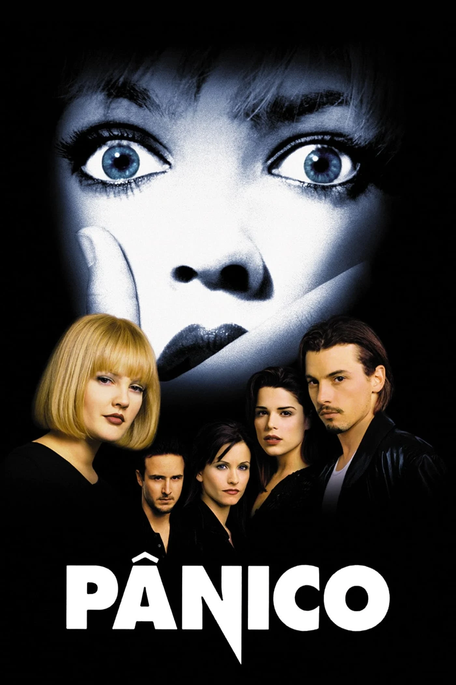
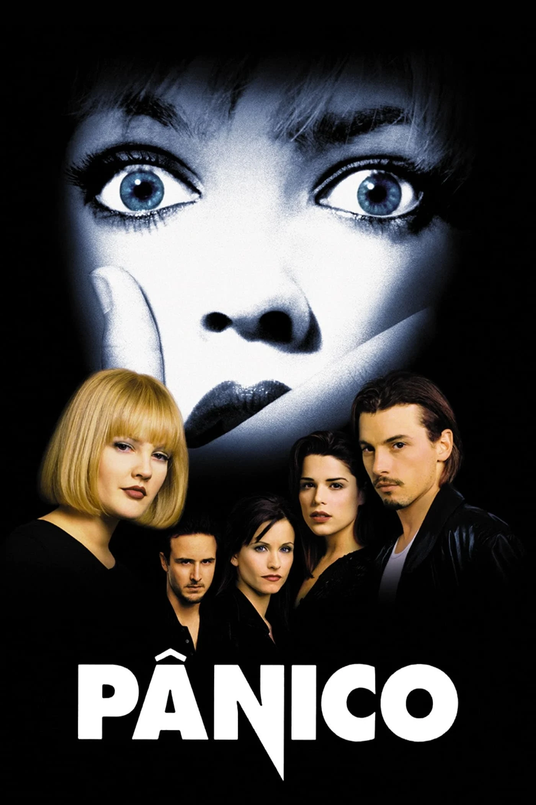
 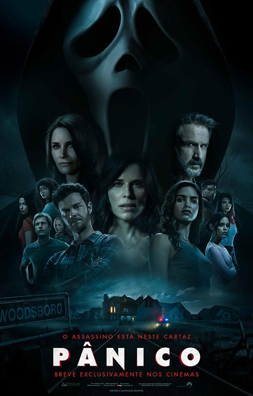
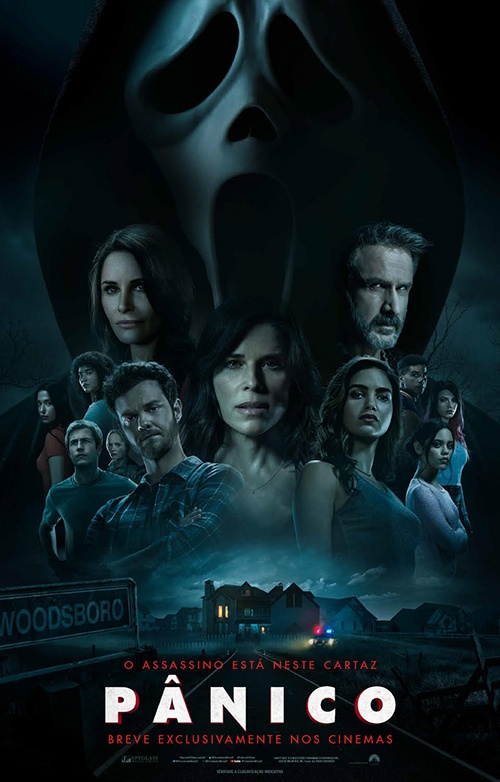
O terror slasher é um subgênero do terror que se concentra em assassinos
em série brutais e sanguinários. Essas histórias geralmente envolvem
jovens que são perseguidos e atacados por um assassine mascarado. É
um gênero cheio de suspense, violência e reviravoltas surpreendentes.
Massacre da serra elétrica,Sexta feira 13,Panico,Hallowen,Etc
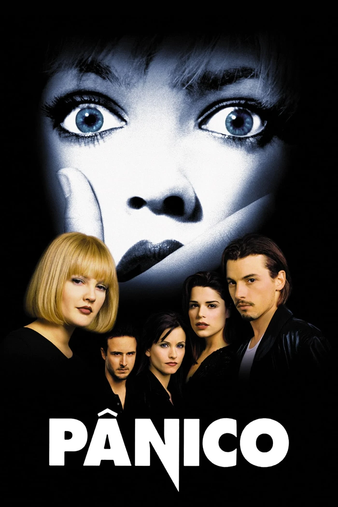
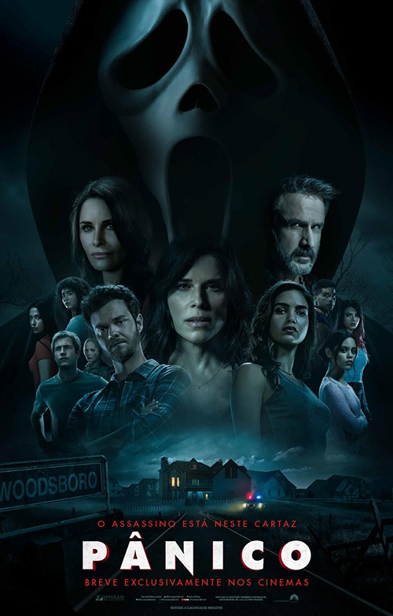
O terror sobrenatural é um gênero que explora o medo através de elementos
paranormais e sobrenaturais. Filmes,livros e séries desse gênero geralmente
envolvem fantasmas, demônios, criaturas sobrenaturais e eventos inexplicáveis.
A ideia é criar uma atmosfera assustadora e provocar arrepios na espinha
Freira,Invocação do mal,Sobrenatural,Anabelle,A entidade,Etc

error psicológico ou horror psicológico é um subgênero do terror, no qual o medo é gerado
a partir da vulnerabilidade da mente humana a alguma situação ou sensação que causa um
desconforto mental, tendo como foco representar estados mentais, emocionais e psicológicos
para assustar, perturbar e/ou desestabilizar seu público. Se diferenciando do terror padrão,
onde o medo normalmente é acompanhado do nojo ou da repulsa ao sangue e à violência
Corra,Fuja,Hereditario,Sorria,It,Etc
 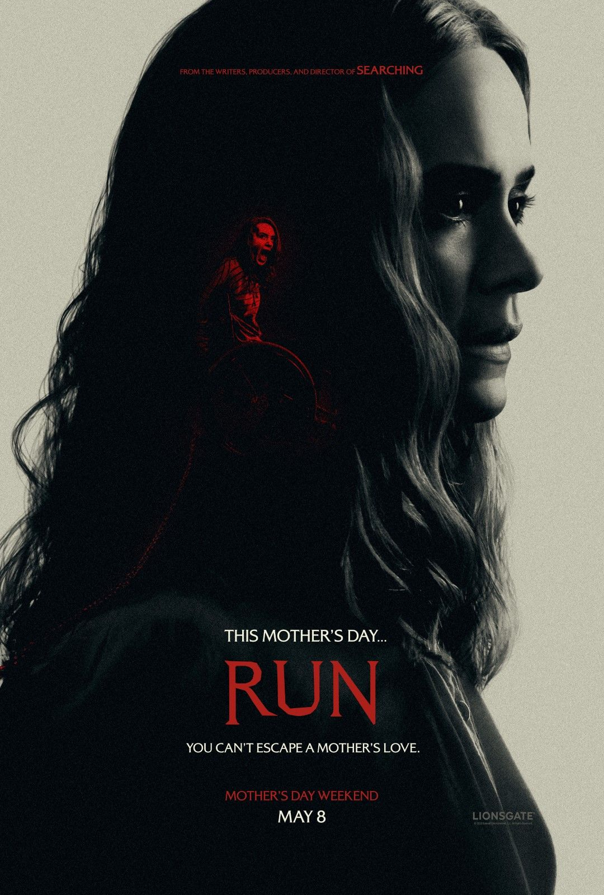
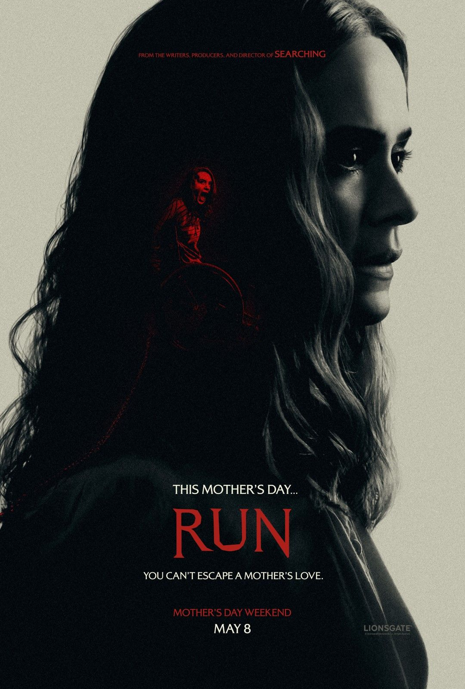
 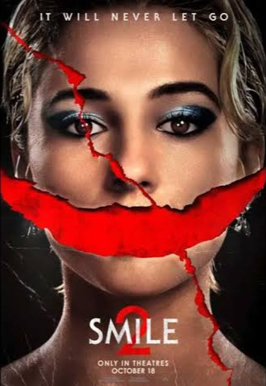
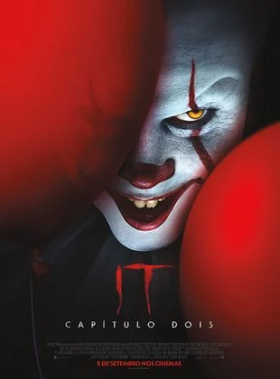
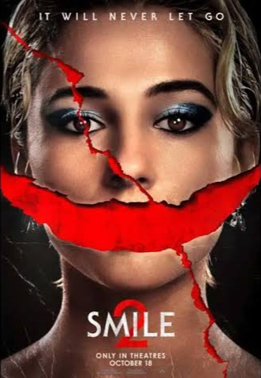
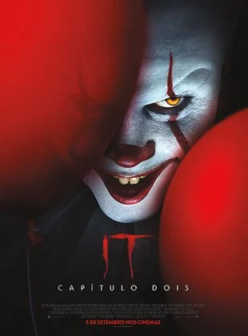
O terror teen é um subgênero do terror que se concentra em histórias assustadoras envolvendo
adolescentes como protagonistas. Essas histórias geralmente acontecem em ambientes como escolas,
acampamentos ou festas, onde os jovens enfrentam ameaças sobrenaturais ou assassinos.
A hora do pesadelo,Carrie,A morte te da parabéns,Rua do medo,Etc
O terror gore é um subgênero cinematográfico dos filmes de horror, que é caracterizado pela
presença de cenas
extremamente violentas, com muito sangue, viseeras e restos mortais de humanos ou animais. O
objetivo
das produções do gênero gore é horrorizar e chocar o espectador, despertando sensações de
desespero, ansiedade e medo.
Centopéia humana,Canibais,Terrifier,Jogos mortais,Etc
 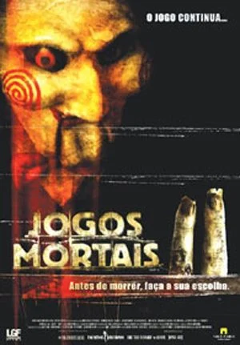
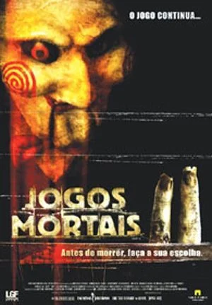

O terror cósmico é um subgênero do terror que explora o desconhecido e o sobrenatural no contexto
do universo
e do cosmos. Geralmente, envolve forças cósmicas, entidades extraterrestres e a ideia de que há
algo
muito maior do que nós mesmos lá fora. É um tipo de terror que nos faz questionar nossa
insignificância
diante do vasto e misterioso universo.
Alien,War of the words,Color out of space,Vida,Aniquilação,Etc
O terror "found footage" é um subgênero que utiliza a técnica de apresentar a história como se
fosse um registro
encontrado de eventos reais. Geralmente, é filmado em primeira pessoa, como se fosse um
documentário ou gravações
Creep,A bruxa de Blair,Rec,Atividade paranormal,Etc

O terror zumbi é um subgênero assustador que envolve mortos-vivos sedentos de carne humana.
Geralmente, as histórias
se passam em um mundo pós-apocalíptico, onde os zumbis dominam e os sobreviventes lutam para se
manter vivos. É
um gênero cheio de ação, suspense e momentos assustadores.
Guerra mundial Z,Zumbilândia,Alive,Trem para Busan,Residente evil
O terror gótico é um subgênero literário e cinematográfico que combina elementos de horror,
mistério, romance e
estética sombria. Geralmente envolve castelos assombrados, personagens misteriosos e
atmosfera sinistra. É uma forma
de contar histórias que busca criar uma sensação de medo e suspense.
Cabeças vão rolar,Dracula,Franstein,Nosferatu,A colina escarlate,Etc


O terror animal é um subgênero do terror que envolve animais como protagonistas ou
antagonistas assustadores. Pode ser
sobre animais selvagens que se tornam ameaçadores ou sobre animais domésticos que se
tornam perigosos. Essas histórias
exploram o medo do desconhecido e a sensação de vulnerabilidade diante da natureza.
Jaws,Gujo,Anaconda,Os passaros,The ghost and the darkness,Etc

O terror cômico, também conhecido como "horror comedy", é um gênero que combina
elementos de terror e comédia para criar uma
experiência única e divertida. Esses filmes, livros ou séries geralmente apresentam
situações assustadoras, mas com um
toque de humor para aliviar a tensão.
Todo mundo em pânico,A baba,A morte te da parabéns,Morte morte morte,Freaky,Etc
 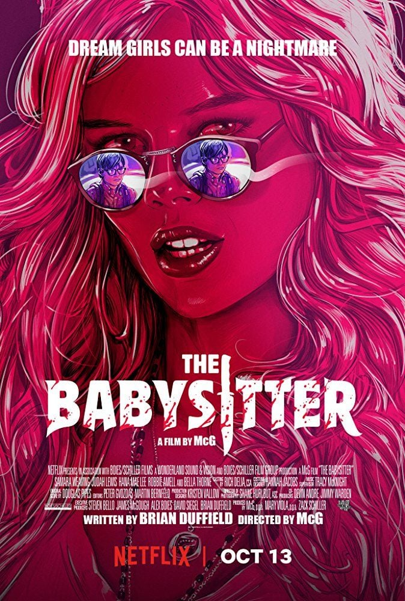
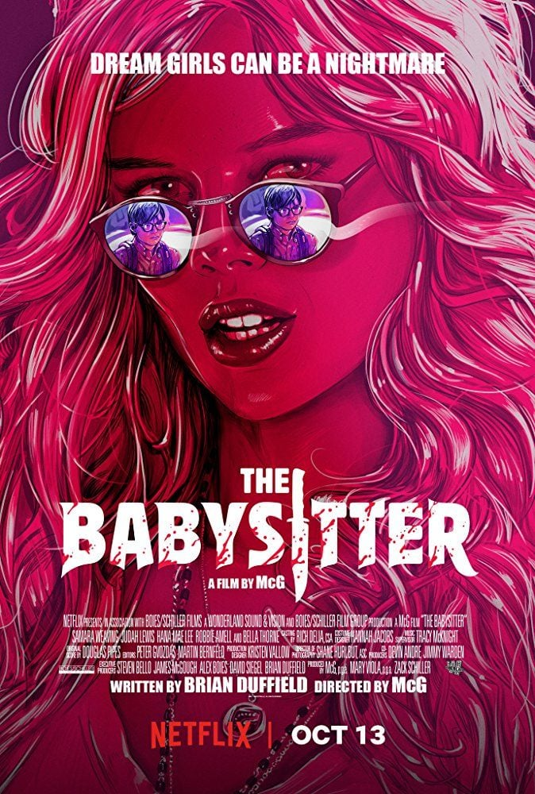
 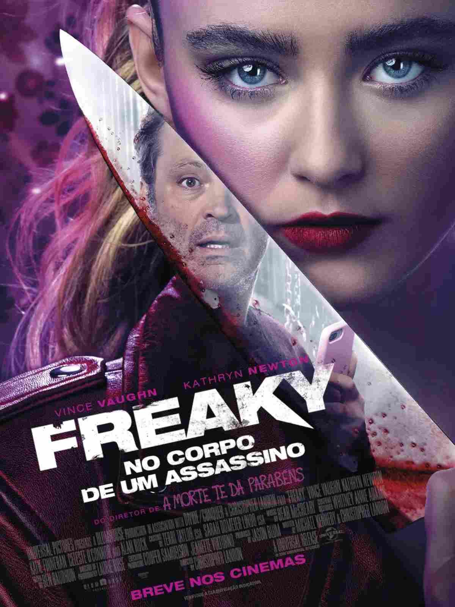
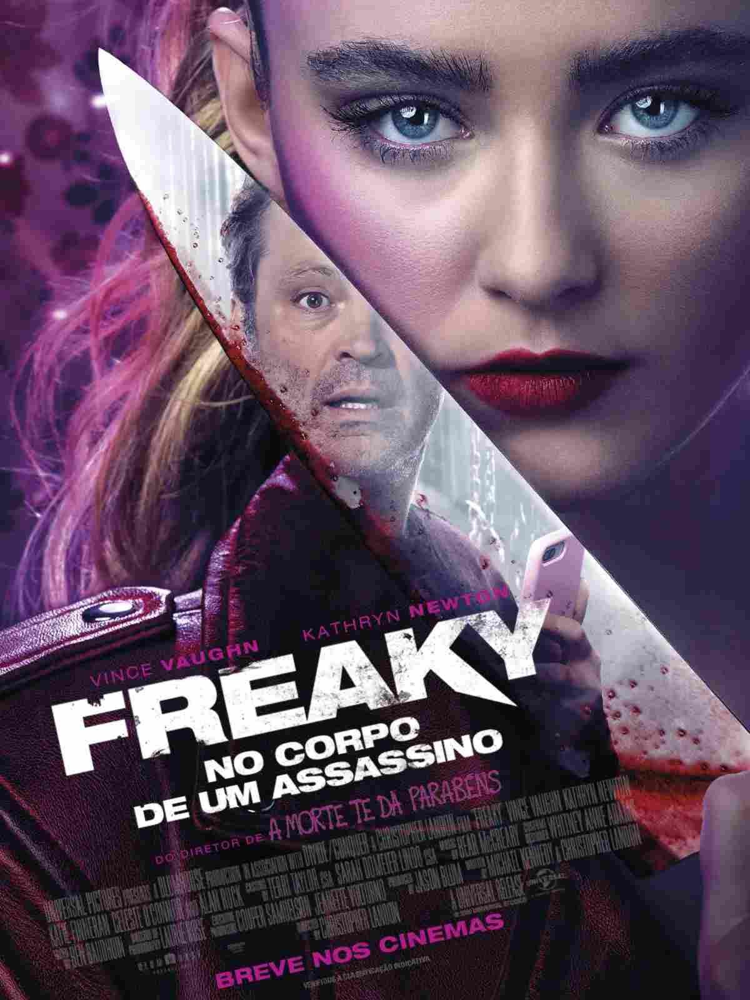
O terror trash é um subgênero do terror conhecido por seus elementos exagerados,
enredos absurdos e efeitos especiais de
baixo orçamento. Os filmes de terror trash geralmente são tão ruins que se
tornam divertidos de assistir. Eles abraçam o
ridículo e não se levam a sério, proporcionando uma experiência única e cheia de
humor involuntário.
Killer klowns,Sharknado,Pink flamingos,Rubber,Ursinho pooh sangue e mel,Etc
 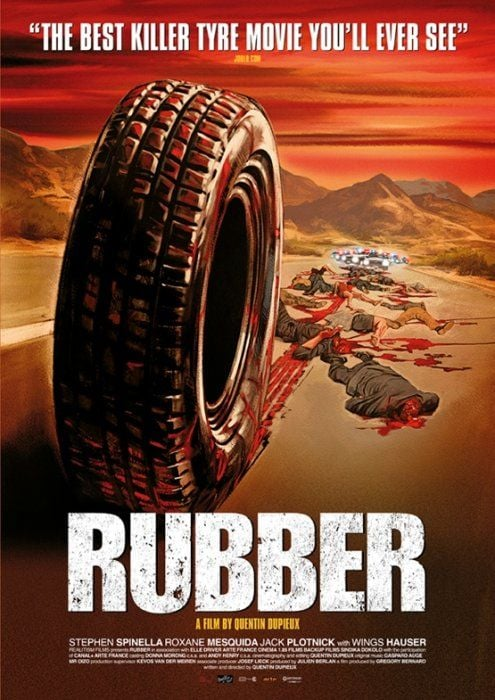
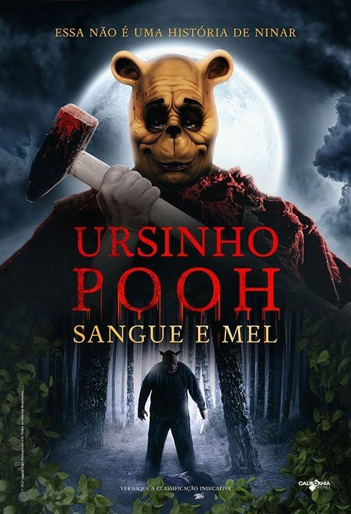
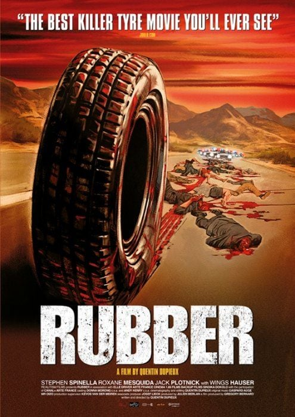
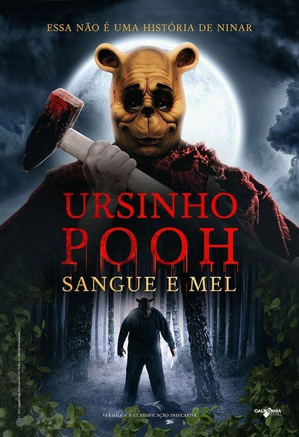